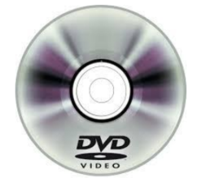

1995-2000
Avançao tecnologico:
• 1995: Microsoft lança o Windows 95

• 1998: Nascem os CDs graváveis e regraváveis (CD-RW); Microsoft lança o Windows 98.


•Filmes/desenhos/séries:
• 1997: Satoshi Tajiri cria o Pokémon (anime)
•Músicas de sucesso:
• 1995: morrem, num acidente aéreo, todos os integrantes do grupo musical Mamonas Assassinas.
•Acontecimentos diversos:
• 1999: o euro passa a circular em 11 países da União Europeia.